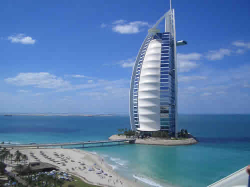

Thứ Bảy, , 4/1/2020 - 04:29 PM
Vì Sao tên lửa Mỹ có thể đánh
trúng xe chở tướng cấp cao Iran
(Dân Trí) - Nhiều câu hỏi đã được đặt ra nhiều về sự chính xác của
cuộc không kích do máy bay không
người lái Mý tiến hành
nhằm vào đoàn xe chở tư lệnh cấp cao Iran khiến vị tường
này thiệt mạng
>> Những đòn Iran có thể đáp trả Mỹ sau khi mất tướng
cấp cao
>> Chân dung vị tướng Iran thiệt mạng trong cuộc không
kích của Mỹ